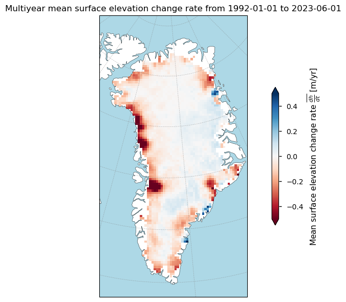
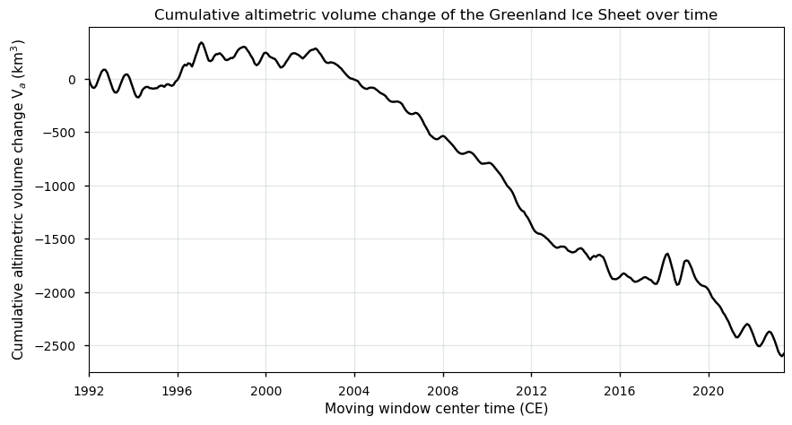
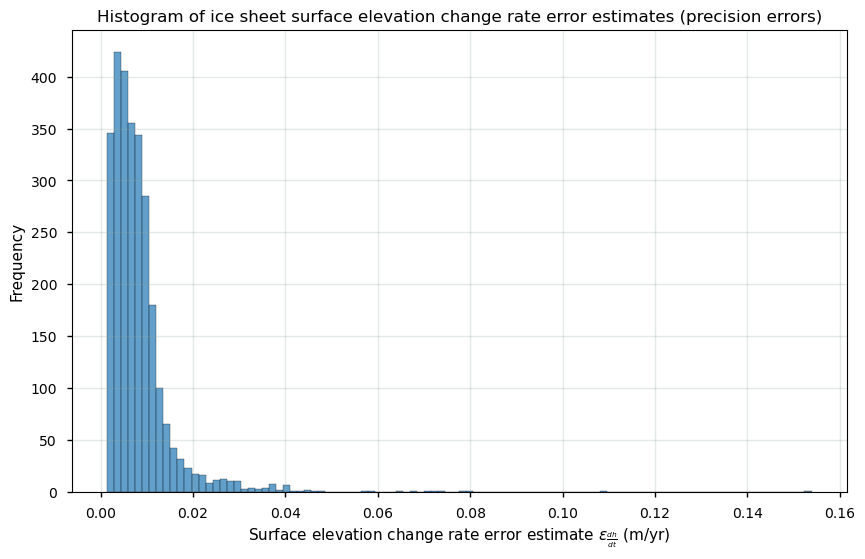
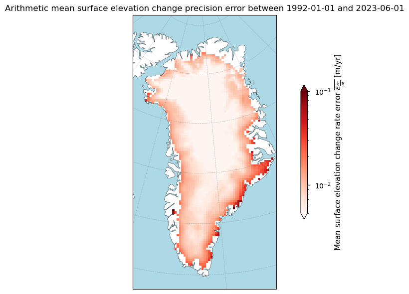
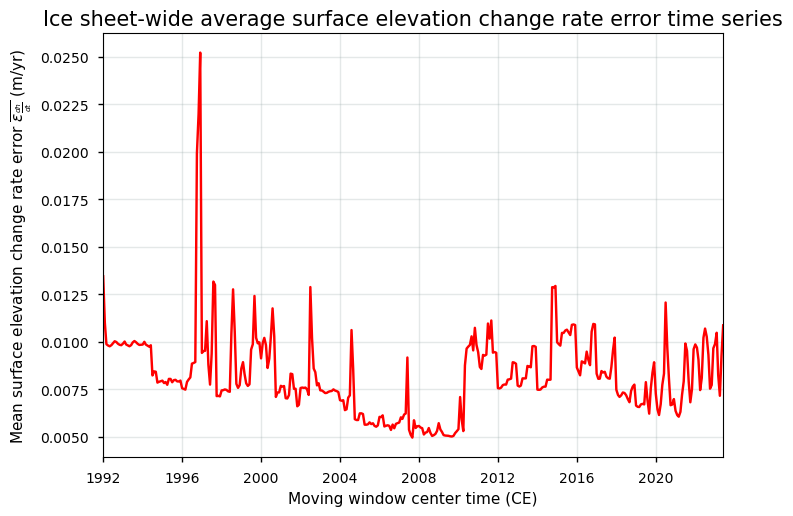
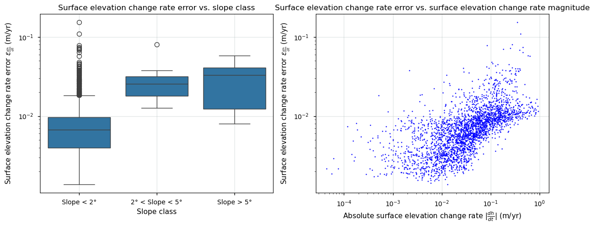
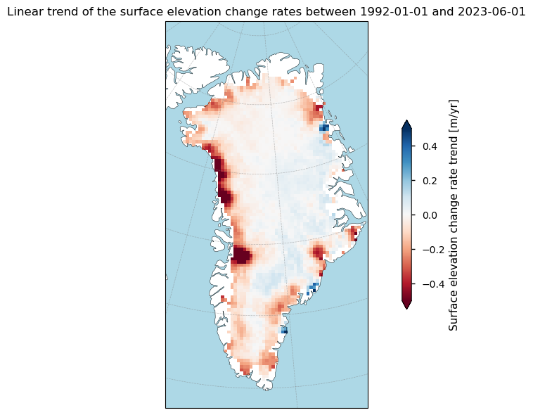
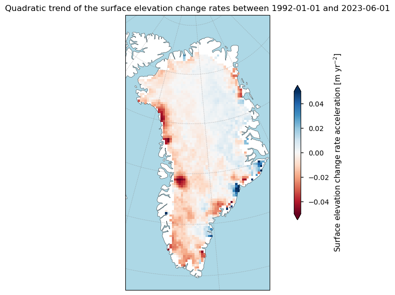
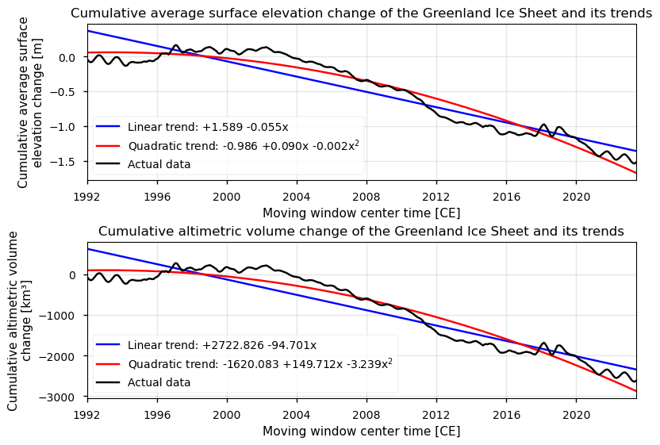

1.3.1. Uncertainty of ice sheet surface elevation change data over Greenland for volume and mass change trend assessments#
Production date: 17-07-2024
Update: 27-01-2025
Dataset version: 5.0
Produced by: Yoni Verhaegen and Philippe Huybrechts (Vrije Universiteit Brussel)
🌍 Use case: Monitoring the spatial distribution of Greenland ice sheet surface elevation (and mass/volume) change rates over the last several decades to be used in the context of the current global warming#
❓ Quality assessment question#
How adequate are the ice sheet surface elevation change data in terms of their uncertainty and how does it affect estimates of ice sheet volume/mass changes, variability and trends?
The C3S surface elevation change (SEC) product quantifies changes in the surface elevation of ice sheets, providing crucial insights into their response to climate change. Satellite remote sensing is the only practical method for regularly monitoring surface elevation changes over those large, remote ice sheet areas. As such, SEC data on the Climate Data Store (CDS) are derived from satellite radar altimetry, where the time delay between a transmitted pulse and its surface echo is converted into distance, adjusted for the satellite’s known elevation above a reference ellipsoid. Repeated measurements from multiple satellite missions, combined with filtering, corrections, and processing, create a consistent time series of gridded ice sheet surface elevation changes [1, 2].
While these techniques offer extensive spatial and temporal coverage, they also have limitations, such as inconsistencies due to data aggregation from different satellite sensors and missions. In that regard, this notebook investigates how well the dataset on the CDS (here we use version 5.0) can be used to monitor the spatial distribution of Greenland Ice Sheet (GrIS) surface elevation change rates over the last several decades, as well as to derive reliable values for its (inter/intra-annual) variability and its temporal trends. More specifically, the notebook evaluates whether the dataset is of sufficient maturity and quality for that purpose in terms of its spatio-temporal uncertainty.
🚨 Although this notebook deals with the Greenland Ice Sheet only, surface elevation change data for the Antarctic Ice Sheet are also available.
📢 Quality assessment statement#
These are the key outcomes of this assessment
The Greenland Ice Sheet (GrIS) surface elevation change (SEC) dataset consists of mature and quality-rich data, covering a time period of over 30 years with a consistent monthly temporal resolution, minimal data gaps, and meeting minimum international error thresholds for nearly all pixels as proposed by GCOS. This makes it suitable for detecting reliable climate change signals, trends, and variability at local (pixel) to ice sheet-wide scales.
Radar altimeters generally provide more accurate surface elevation change measurements in the central, flat regions of the GrIS, where the topography is simpler and the surface is less dynamic, compared to the coastal areas, which feature complex terrain with steep slopes, valleys, ridges, and pronounced seasonal variations in melt and accumulation. Error estimates therefore tend to be higher around the margins. Users should note that biases remain, where radar altimetry tends to underestimate surface lowering rates compared to laser altimetry. This underestimation is aided by the coarse spatial resolution (25 km) of the C3S product, which does not meet minimum conventional tresholds and prevents capturing very localized high mass losses of certain outlet glaciers.
Users should note that surface elevation changes of the C3S product can’t be readily converted to volume nor mass changes of the “actual” ice sheet, because surface elevation changes are not caused by surface melt/runoff and accumulation alone. Converting SEC to volume and mass changes requires adjustments for bedrock uplift, firn densification, and material density differences to ensure accurate estimates of ice sheet mass balance.
📋 Methodology#
Dataset description#
Surface elevation change detection by satellites is a useful tool to grasp the impact of climate change on the ice sheets. In that regard, the dataset on the Climate Data Store (CDS) provides monthly surface elevation change (SEC) values and their uncertainty for the Greenland (GrIS) and Antarctic Ice Sheet (AIS) on a 25 km spatial resolution grid. The core principle involves measuring surface elevations at different times and comparing them to detect changes. In this dataset, they are derived using satellite radar altimetry that contain data from multiple satellite missions, which are grouped together into a consistent time series for each pixel. Surface elevation changes are reported with units of meter per year and are available since 1992 at monthly-spaced intervals. Data are provided in NetCDF format as gridded data and are available for both the GrIS (excluding peripheral glaciers and ice caps) and AIS (including ice shelves).
These ice sheet surface elevation change rates are mathematically expressed as:
\(\dfrac{dh}{dt} = \dfrac{h_{t_2}-h_{t_1}}{t_{2}-t_{1}}\)
where:
\(h\) is the surface elevation (m)
\(t\) the time (y)
The time for a measurement mentioned in the dataset is the center of a 3-year of 5-year moving window (for the GrIS) and a 5-year moving window (for the AIS) used to derive the SEC values. Users should hereby not that not only melt or snow accumulation can cause the surface elevation to increase or decrease. The surface elevation change rate at a certain pixel contains signals from various processes:
\(\dfrac{dh}{dt}_{obs} = \dfrac{SMB}{\rho_m} + \dfrac{BMB}{\rho_i} + \dfrac{D'}{\rho_i} + \dfrac{dC}{dt} + \dfrac{dB}{dt}\)
where the first term on the right-hand side (\(SMB\) in units kg m\(^{-2}\) yr\(^{-1}\)) includes elevation changes from surface mass balance processes (i.e. climatically-driven accumulation and melt/runoff), the second one (\(BMB\) in units kg m\(^{-2}\) yr\(^{-1}\)) due to basal mass balance processes at the ice-bedrock interface, the third one (\(D'\) in units kg m\(^{-2}\) yr\(^{-1}\)) due to ice dynamic processes (e.g. dynamical thinning or thickening), the fourth one (\(C\)) is the vertical velocity due to snow and/or firn compaction (i.e. the transformation and densification of snow towards firn and in a later stage ice), and the last one due to bedrock elevation (\(B\)) changes (i.e. glacial isostatic adjustment). The term \(\rho_m\) is the density of the material lost or gained (snow, firn or ice) and \(\rho_i\) that of ice.
In this notebook, we use version 4.0. For a more detailed description of the data acquisition and processing methods, we refer to the documentation on the CDS and the ECMWF Confluence Wiki (Copernicus Knowledge Base).
Structure and (sub)sections#
Data preparation and processing
Greenland Ice Sheet surface elevation and altimetric volume changes in space and time
Greenland Ice Sheet surface elevation change uncertainty estimates
Ice sheet surface elevation and volume change (linear and quadratic) trend assessment
Implications for deriving reliable values for ice sheet surface elevation and volume/mass change variability and trends
📈 Analysis and results#
Data preparation and processing#
First we load the packages:
Show code cell source
from matplotlib import colors
import matplotlib.pyplot as plt
import cartopy.crs as ccrs
import cartopy.feature as cfeature
import numpy as np
import xarray as xr
from datetime import datetime
import pandas as pd
import seaborn as sns
import scipy.stats
from c3s_eqc_automatic_quality_control import download
import os
from c3s_eqc_automatic_quality_control import download
plt.style.use("seaborn-v0_8-notebook")
############### PLEASE DELETE THE LINE BELOW BEFORE PUBLICATION ###############
os.environ["CDSAPI_RC"] = os.path.expanduser("~/verhaegen_yoni/.cdsapirc")
############### PLEASE DELETE THE LINE ABOVE BEFORE PUBLICATION ###############
Then we define requests for download from the CDS and download the ice sheet surface elevation change data.
Show code cell source
# Select the domain: "greenland" or "antarctica"
domains = ["greenland"]
collection_id = "satellite-ice-sheet-elevation-change"
# Define the request
request = {
"variable": "all",
"format": "zip",
"climate_data_record_type": "tcdr",
"version": "5_0",
}
# Download the data
datasets = {}
for domain in domains:
print(f"{domain=}")
datasets[domain] = download.download_and_transform(
collection_id,
request | {"domain": domain},
).compute()
print('Download completed.')
domain='greenland'
100%|██████████| 1/1 [00:00<00:00, 6.93it/s]
Download completed.
We can read and inspect the data. Let us print out the data to inspect its structure:
Show code cell source
datasets
{'greenland': <xarray.Dataset> Size: 76MB
Dimensions: (time: 378, y: 123, x: 65)
Coordinates:
* time (time) datetime64[ns] 3kB 1992-01-01 ... 2023-06-01
* x (x) float32 260B -7.393e+05 -7.143e+05 ... 8.607e+05
* y (y) float32 492B -3.478e+06 -3.453e+06 ... -4.281e+05
Data variables: (12/15)
start_time (time) datetime64[ns] 3kB 1991-08-01 ... 2014-08-01
end_time (time) datetime64[ns] 3kB 1996-10-31 ... 2023-07-31
grid_projection |S1 1B b''
lat (y, x) float32 32kB 58.0 58.04 58.09 ... 81.55 81.35 81.14
lon (y, x) float32 32kB -57.0 -56.61 -56.21 ... 17.87 18.55
dh (y, x, time) float32 12MB nan nan nan nan ... nan nan nan
... ...
dhdt_stabil (y, x, time) float32 12MB nan nan nan nan ... nan nan nan
dhdt_ok (y, x, time) int8 3MB 0 0 0 0 0 0 0 0 0 ... 0 0 0 0 0 0 0 0
dist (y, x, time) float32 12MB nan nan nan nan ... nan nan nan
land_mask (y, x) int8 8kB 0 0 0 0 0 0 0 0 0 0 ... 0 0 0 0 0 0 0 0 0 0
high_slope (y, x) int8 8kB 0 0 0 0 0 0 0 0 0 0 ... 0 0 0 0 0 0 0 0 0 0
area (y, x) float32 32kB nan nan nan nan nan ... nan nan nan nan
Attributes: (12/32)
Title: Surface Elevation change of the Greenland ice sheet...
institution: Copernicus Climate Change Service, DTU Space - Div....
reference: Simonsen and Sørensen (2017), Sørensen et al. (2018)
contact: copernicus-support@ecmwf.int
file_creation_date: 2023-12-15 16:56:53.584072
project: C3S_312b_Lot4_ice_sheets_and_shelves
... ...
netCDF_version: NETCDF4
product_version: v5
Conventions: CF-1.7
keywords: EARTH SCIENCE CRYOSPHERE GLACIERS/ICE SHEETS/GLACIE...
license: C3S general license
summary: Surface elevation change rate derived for Greenland...}
The version 4.0 is a gridded dataset at a 25 km spatial resolution containing monthly values of the ice sheet surface elevation change rate \(\frac{dh}{dt}\) (dhdt in m/yr) and its uncertainty (dhdt_uncert in m/yr), as well as the surface elevation change between two measurements \(dh\) (dh in m, and hence not normalized to “per year”) of a grid cell since 1992. The uncertainties are here reported as precision errors or standard deviations. A land mask (land_mask), slope mask (high_slope), validity flags (dhdt_ok) and the surface area of a grid cell (area) are also included. The time for a measurement mentioned in the dataset is the center of a 3-year or 5-year moving window used to derive the surface elevation change values.
Let us check the total temporal extent of the data:
Show code cell source
time_bds = datasets['greenland']
time_bounds_values = time_bds['time'].values
begin_period = datetime.strptime(str(time_bounds_values[0]).split('T')[0], "%Y-%m-%d")
end_period = datetime.strptime(str(time_bounds_values[-1]).split('T')[0], "%Y-%m-%d")
time_difference = end_period - begin_period
decimal_years = time_difference.days / 365.25
print(f'The begin period of the dataset is {begin_period.date()} and the end period is {end_period.date()}, which is a total of time {decimal_years:.2f} years.')
The begin period of the dataset is 1992-01-01 and the end period is 2023-06-01, which is a total of time 31.41 years.
Let us now perform some data handling and define a plotting function before getting started with the analysis:
Show code cell source
def get_maps(ds, domains):
(sec_name,) = set(ds.data_vars) & {"sec", "dhdt"}
da = ds[sec_name]
da.attrs["long_name"] = "Surface elevation change rate"
if 'greenland' in domains:
da_dh = ds["dh"]
da_dh.attrs["long_name"] = "Surface elevation change"
da_dh_ok = ds["dhdt_ok"]
da_dh_ok.attrs["long_name"] = "Validity of surface elevation change"
da_dist = ds["dist"]
da_dist.attrs["long_name"] = "Distance to measurement"
da_err = ds[f"{sec_name}_uncert"]
da_err.attrs["long_name"] = "Surface elevation change precision error"
(mask_name,) = set(ds.data_vars) & {"land_mask", "surface_type"}
mask = ds[mask_name] > 0
missing = 100 * (da.sizes["time"] - da.notnull().sum("time")) / da.sizes["time"]
missing.attrs = {"long_name": "Missing data", "units": "%"}
year_to_ns = 1.0e9 * 60 * 60 * 24 * 365
coeffs = []
da_cumsum = da.cumsum("time") / 12
for degree, name in enumerate(("linear_trend", "acceleration"), start=1):
coeff = da_cumsum.polyfit("time", degree)["polyfit_coefficients"].sel(
degree=degree, drop=True
)
coeff = degree * coeff * (year_to_ns**degree)
coeff.attrs = {
"units": f"{da.attrs['units'].split('/', 1)[0]} yr$^{{-{degree}}}$",
"long_name": f"{da.attrs['long_name']} {name}".replace("_", " "),
}
coeffs.append(coeff.rename(name))
data_vars = [
da.rename("sec"),
da_err.rename("sec_err"),
mask.rename("mask"),
missing.rename("missing"),
ds["high_slope"],
]
if 'greenland' in domains:
data_vars.append(da_dh.rename("dh"))
data_vars.append(da_dh_ok.rename("dhdt_ok"))
data_vars.append(da_dist.rename("dhdt_distance"))
ds = xr.merge(data_vars + coeffs)
return ds.mean("time", keep_attrs=True)
# Select the specific dataset you want to process, e.g., "greenland"
datasets_original = datasets
selected_ds = datasets["greenland"]
datasets = get_maps(selected_ds, domains)
datasets_get_maps = datasets
# Define plotting function
def plot_maps_single(da, suptitle=None, **kwargs):
kwargs.setdefault("cmap", "RdBu")
# Create subplots with Polar Stereographic projection
fig, ax = plt.subplots(figsize=(10, 6), subplot_kw={'projection': ccrs.Stereographic(central_longitude=-45, central_latitude=90, true_scale_latitude=70)})
# Plot the data
subset_da = da
im = subset_da.plot.imshow(ax=ax, add_colorbar=False, **kwargs)
# Set extent and plot features
ax.set_extent([da.coords['x'].values.min(), da.coords['x'].values.max(), da.coords['y'].values.min(), da.coords['y'].values.max()], ccrs.Stereographic(central_longitude=-45, central_latitude=90, true_scale_latitude=70))
ax.add_feature(cfeature.LAND, edgecolor='black', color='white')
ax.add_feature(cfeature.OCEAN, color='lightblue')
ax.coastlines()
if suptitle:
ax.set_title(suptitle)
ax.gridlines(draw_labels=False, linewidth=0.5, color='gray', alpha=0.5, linestyle='--')
# Add colorbar
cb = fig.colorbar(im, ax=ax, extend='both', shrink=0.49, label=f"{da.attrs['long_name']} [{da.attrs['units']}]")
plt.tight_layout()
plt.show()
# Define the function for plotting a time series
def get_timeseries(ds):
ds["time"].attrs["long_name"] = "Time"
(sec_name,) = set(ds.data_vars) & {"sec", "dhdt"}
da = ds[sec_name]
da.attrs["long_name"] = "Surface elevation change rate"
if 'greenland' in domains:
da_dh = ds["dh"]
da_dh.attrs["long_name"] = "Surface elevation change"
da_dh.attrs["units"] = "m"
da_vol = (da*ds["area"])/1e9
da_vol.attrs["long_name"] = "Volume change rate"
da_vol.attrs["units"] = "km³"
da_err = ds[f"{sec_name}_uncert"]
da_err.attrs["long_name"] = "Surface elevation change rate error"
(mask_name,) = set(ds.data_vars) & {"land_mask", "surface_type"}
mask = ds[mask_name] > 0
missing = 100 * (mask.sum() - da.notnull().sum(("x", "y"))) / mask.sum()
missing.attrs = {"long_name": "Missing data", "units": "%"}
data_vars = [
da.rename("sec"),
da_err.rename("sec_err"),
missing.rename("missing"),
]
if 'greenland' in domains:
data_vars.append(da_dh.rename("dh"))
data_vars.append(da_vol.rename("dvol"))
ds = xr.merge(data_vars)
# Apply mean to all variables except 'dvol', which will use sum
mean_ds = ds.drop_vars('dvol').mean(("x", "y"), keep_attrs=True)
sum_dvol = ds['dvol'].sum(("x", "y"), keep_attrs=True)
# Combine the results
ds = xr.merge([mean_ds, sum_dvol])
return ds
selected_ds = datasets_original["greenland"]
datasets_timeseries = get_timeseries(selected_ds)
datasets_timeseries["time"].attrs["units"] = "yr"
Now, our dataset array only holds the most important information, such as the multiyear mean surface elevation change rates (sec) and the arithmetic mean precision error (sec_err). With the function above, we also calculated linear and quadratic trends of surface elevation changes, as well as the amount of missing values.
With everything ready, let us now begin with the analysis:
Greenland Ice Sheet surface elevation and altimetric volume changes in space and time#
We begin by plotting the Greenland multiyear mean surface elevation change rate \(\overline {\frac{dh}{dt}}\) between the beginning and end period with the defined plotting function:
Show code cell source
# Apply the function to the surface elevation change rate data
da = datasets["sec"]
da.attrs = {
"long_name": r"Mean surface elevation change rate $\overline {\frac{dh}{dt}}$",
"units": "m/yr",
}
# Define dataset to be plotted
suptitle_text = rf"Multiyear mean surface elevation change rate from {begin_period.date()} to {end_period.date()}"
_ = plot_maps_single(
da,
vmin=-0.5,
vmax=0.5,
suptitle=suptitle_text,
)

Figure 1. Multiyear mean surface elevation change (SEC) over Greenland from the SEC dataset on the Climate Data Store.
Overall, the map provides a visual representation of the changes of the surface elevation of Greenland’s ice sheet over the last several decades. The red regions, particularly around the margins, indicate areas of significant surface lowering, which is consistent with observations of accelerated glacier flow and ice thinning in these regions [1, 3].
Let us quantify the ice sheet-wide average value:
Show code cell source
print(f'The Greenland ice sheet-wide average surface elevation change rate value between {begin_period.date()} and {end_period.date()} is {(np.nanmean(da.values)):.5f} m/yr.')
The Greenland ice sheet-wide average surface elevation change rate value between 1992-01-01 and 2023-06-01 is -0.04856 m/yr.
The negative value indicates that the surface of the ice sheet, in general, has been lowering during the last several decades, resulting in net negative values.
We can also convert the surface elevation change values to cumulative altimetric volume changes \(V_a\) (with subscript ‘a’ meaning altimetric) by combining the variables dh and area. We therefore have to make the assumption that surface elevation changes due to bedrock uplift and firn compaction rates are unsignificant or unknown:
\(dV_{a,i} \) [m\(^{3}\)] \( = \sum\limits^{x,y}{dV_{x,y,i}} = \sum\limits^{x,y}(d{h_{x,y,i}}*A_{x,y})\)
where \(d{h_{x,y}}\) is the height change between two measurement intervals \(i\) (from dh, in m) and \(A_{x,y}\) the surface area (from area, in m\(^2\)) of pixel \(x,y\) .
We then take the cumulative value over time to get the cumulative altimetric volume change:
\( {V_a} \) [km\(^{3}\)] \( = \sum\limits_{i={1}}^{{{n}}} \left(\dfrac{dV_{a,i}}{1 \cdot 10^9}\right) \)
with \(dV_{a,i}\) the ice sheet-wide altimetric volume change (in m\(^{3}\)) between two measurements (as calculated above) and \(n\) the number of temporal intervals in the time series.
Let us plot this as a time series:
Show code cell source
# Given datasets_original is the dataset dictionary
greenland_dataset = datasets_original['greenland']
# Extract the 'dh' and 'area' variables
dh_variable = greenland_dataset['dh']
area_variable = greenland_dataset['area']
# Sum over the x and y dimensions and convert to km^3
dh_summed_time_series = (area_variable*dh_variable).sum(dim=['x', 'y'])/(1e9)
dh_summed_time_series.attrs = {
"long_name": r"Cumulative volume change",
"units": "km³",
}
# Plot the resulting time series
fig, ax = plt.subplots(figsize=(10, 5))
dh_summed_time_series.plot(color='black')
plt.title('Cumulative altimetric volume change of the Greenland Ice Sheet over time')
ax.set_xlim(np.min(datasets_timeseries["time"]),np.max(datasets_timeseries["time"]))
ax.set_xlabel("Moving window center time (CE)")
plt.ylabel('Cumulative altimetric volume change V$_a$ (km$^3$)')
plt.grid(color='#95a5a6',linestyle='-',alpha=0.25)
plt.show()

Figure 2. Cumulative altimetric volume change of the Greenland ice sheet from the SEC dataset on the Climate Data Store.
As expected, the plot shows a downward pattern of the altimetric volume with a clear trend towards volume losses over time, especially during the more recent years. However, the curve should be interpreted with care.
Greenland’s bedrock is currently uplifting, due to slow mantle-deformation processes and elastic processes associated with the ongoing ice loss today. Especially around the margins, where ice loss is currently highest, bedrock uplift rates are in the order of several mm per year. Effects from near-surface firn density changes are even larger (i.e. up to a few cm per year) but also uncertain [4].
Moreover, for more significant surface lowering rates (lower than ca. -0.5 to -1 m/yr), there seems to be a bias towards an underestimation of lowering rates by the radar altimetry (as used in the C3S products) when compared to the laser altimeters. In that sense, the dataset on the Climate Data Store (CDS) seems to underestimate surface lowering rates, which is presumably related to different modes of data acquisition (e.g. varying footprint sizes between radar and laser instruments), varying external factors during data acquisition (e.g. a varying penetration depth of the radar pulse into snow), different algorithm applications and settings, and post-processing procedures [3]. Additionally, in regions with high surface lowering rates, the coarse resolution of the C3S product (25 km) also tends to aid the underestimation of SEC due to the very localized high mass/volume losses of certain outlet glaciers [5].
All the above processes biase the volume change estimates of the “actual” ice sheet, making the curve above uncompareable to, for example, magnitudes of mass changes from the ice sheet from GRACE(-FO) measurements (which, for example, have been corercted for glacial isostatic adjustment processes and also include data from peripheral regions).
Greenland Ice Sheet surface elevation change uncertainty estimates#
Let us now consider the errors of the data. The total error of a surface elevation change estimate is theoretically given by the sum of the precision (random) and the accuracy (systematic) error:
\( \varepsilon = \sigma + \delta \) where \(\sigma\) is the random error (i.e. standard deviation) and \(\delta\) the systematic error.
In the surface elevation change dataset, precision errors are reported as the standard deviation (i.e. the 68% confidence interval) and the accuracy error is not considered. Therefore, in our case, \(\delta\) = 0, meaning that \(\varepsilon_{\frac{dh}{dt}}\) = \(\sigma_{\frac{dh}{dt}}\).
Let us now explore a bit more the uncertainty of the data. Quantitative pixel-by-pixel error estimates are namely available for the dataset. Let us begin by plotting a histogram of the error values:
Show code cell source
plt.figure(figsize=(10, 6))
error_data = (datasets['sec_err'].values.flatten())
plt.hist(error_data, bins=100, edgecolor='black', alpha=0.7)
plt.title('Histogram of ice sheet surface elevation change rate error estimates (precision errors)')
plt.xlabel(r'Surface elevation change rate error estimate $\varepsilon_{\frac{dh}{dt}}$ (m/yr)')
plt.ylabel('Frequency')
plt.grid(color='#95a5a6',linestyle='-',alpha=0.25)
plt.show()

Figure 3. Histogram of surface elevation change error estimates for the Greenland ice sheet from the SEC dataset on the Climate Data Store.
Most errors (standard deviations) seem to be situated between 0 and 0.01 m/yr. To get a better idea, we can also plot the arithmetic mean values over time for each pixel to check their spatial distribution:
Show code cell source
# Apply the function to the surface elevation change rate error data
da = datasets["sec_err"]
da.attrs = {
"long_name": r"Mean surface elevation change rate error $\overline {\epsilon_{\frac{dh}{dt}}}$",
"units": "m/yr",
}
# Plot the data
suptitle_text = rf"Arithmetic mean surface elevation change precision error between {begin_period.date()} and {end_period.date()}"
_ = plot_maps_single(
da,
cmap="Reds",
vmin=0.005,
vmax=0.1,
norm=colors.LogNorm(),
suptitle=suptitle_text,
)

Figure 4. Spatial distribution of temporarily averaged surface elevation change errors for the Greenland ice sheet from the SEC dataset on the Climate Data Store.
Let us quantify the ice sheet-wide average value:
Show code cell source
print(f'The Greenland ice sheet-wide average surface elevation change rate error (standard deviation) between {begin_period.date()} and {end_period.date()} is {(np.nanmean(da.values)):.3f} m/yr.')
The Greenland ice sheet-wide average surface elevation change rate error (standard deviation) between 1992-01-01 and 2023-06-01 is 0.008 m/yr.
We can accordingly plot the data as a time series:
Show code cell source
fig, ax = plt.subplots()
ax.plot(datasets_timeseries["time"],datasets_timeseries["sec_err"],'r')
ax.grid(color='#95a5a6',linestyle='-',alpha=0.25)
ax.set_xlim(np.min(datasets_timeseries["time"]),np.max(datasets_timeseries["time"]))
ax.set_xlabel("Moving window center time (CE)")
ax.set_ylabel(r"Mean surface elevation change rate error $\overline {\epsilon_{\frac{dh}{dt}}}$ (m/yr)")
ax.set_title("Ice sheet-wide average surface elevation change rate error time series",fontsize=15);
plt.show()

Figure 5. Time series of the spatially averaged surface elevation change error for the Greenland ice sheet from the SEC dataset on the Climate Data Store.
Given that the GCOS (2022) requires a precision error threshold (expressed as 2\(\sigma\)) of at least 0.1 m/yr, it can be stated that this requirement is clearly met for the Greenland Ice Sheet [6]. The largest error source is for the data is the geolocation of the radar echo (i.e. the so-called “slope-induced errors”), which occurs over steeper terrain. This is because the surface elevation change estimate results from the highest points within the radar’s footprint during data acquisition. This pattern is clearly shown when plotting the errors against the surface slope classes:
Show code cell source
datasets = {
'high_slope': datasets['high_slope'],
'sec_err': datasets['sec_err'],
'sec': datasets['sec']
}
# Flatten the arrays and remove NaN values for the boxplot
df = pd.DataFrame({
'slopemask_gris': np.ravel(datasets["high_slope"]),
'mean_sec_err_gris': np.ravel(datasets["sec_err"])
}).dropna()
fig, (ax1, ax2) = plt.subplots(1, 2, figsize=(12, 5))
# Boxplot
sns.boxplot(data=df, x='slopemask_gris', y='mean_sec_err_gris', ax=ax1)
ax1.set_ylabel(r'Surface elevation change rate error $\varepsilon_{\frac{dh}{dt}}$ (m/yr)')
ax1.set_xlabel('Slope class')
ax1.set_title("Surface elevation change rate error vs. slope class")
ax1.set_xticks([0, 1, 2])
ax1.set_xticklabels(["Slope < 2°", "2° < Slope < 5°", "Slope > 5°"])
ax1.set_yscale('log')
ax1.grid(color='#95a5a6',linestyle='-',alpha=0.25)
# Scatter plot
sec_err = np.ravel(datasets["sec_err"])
sec = np.ravel(datasets["sec"])
# Remove NaN values for the scatter plot
mask = ~np.isnan(sec_err) & ~np.isnan(sec)
ax2.scatter(abs(sec[mask]), abs(sec_err[mask]), color='blue', s=2)
ax2.set_xlabel(r'Absolute surface elevation change rate $|\frac{dh}{dt}|$ (m/yr)')
ax2.set_ylabel(r'Surface elevation change rate error $\varepsilon_{\frac{dh}{dt}}$ (m/yr)')
ax2.set_title("Surface elevation change rate error vs. surface elevation change rate magnitude")
ax2.set_yscale('log')
ax2.set_xscale('log')
ax2.grid(color='#95a5a6',linestyle='-',alpha=0.25)
plt.tight_layout()
plt.show()

Figure 6. Relationship between the surface elevation change error and (left) the slope of the terrain and (right) the magnitude of the ice sheet surface elevation change over Greenland from the SEC dataset on the Climate Data Store.
In general, radar altimeters used to derive surface elevation changes perform more accurately in the central, flat regions of the Greenland ice sheet, which have a simpler topography and a more stable surface, compared to the coastal areas with a more complex terrain (with steep slopes, valleys and ridges and large seasonal cycles of melt and accumulation). As a result, precision errors tend to be larger around the margins of the ice sheets.
Let us now quantify the amount of pixels that do not meet the GCOS precision error requirement of 0.1 m/yr. We therefore multiply the errors accompanying the data by 2 to get a precision error in the form of 2 standard deviations (as proposed by GCOS):
Show code cell source
ds = datasets_original['greenland']
dhdt_uncert = ds['dhdt_uncert']
num_pixels_below_threshold = (2*dhdt_uncert < 0.1).sum().item()
total_pixels = dhdt_uncert.count().item()
percentage_below_threshold = (num_pixels_below_threshold / total_pixels) * 100
print(f"The absolute number of pixels with a surface elevation change rate precision error (2σ) < 0.1 m/yr is {num_pixels_below_threshold} pixels or {percentage_below_threshold:.2f}%.")
The absolute number of pixels with a surface elevation change rate precision error (2σ) < 0.1 m/yr is 1025570 pixels or 99.41%.
Ice sheet surface elevation and volume change (linear and quadratic) trend assessment#
In this subsection, we explore the spatial distribution of surface elevation change rate trends across the Greenland Ice Sheet. Let us start by exploring the linear trends:
Show code cell source
# Apply the function to the surface elevation change linear trends
da = xr.where(datasets_get_maps["sec"].isnull(), np.nan, datasets_get_maps["linear_trend"])
da.attrs = {
"long_name": r"Surface elevation change rate trend",
"units": "m/yr",
}
# Plot the data
suptitle_text = rf"Linear trend of the surface elevation change rates between {begin_period.date()} and {end_period.date()}"
_ = plot_maps_single(
da,
vmin=-0.5,
vmax=0.5,
suptitle=suptitle_text,
)

Figure 7. Linear trends of the ice sheet surface elevation change over Greenland from the SEC dataset on the Climate Data Store.
The maps shows a similar pattern as the multiyear mean surface elevation change rates. The observed patterns highlight regional variability in surface elevation change trends, with coastal areas experiencing more substantial changes compared to interior regions. The data align with expected climate change impacts, where warming temperatures lead to increased melting and surface lowering, particularly in the low-elevation coastal areas [1, 3].
Let us now consider quadratic trends (accelerations):
Show code cell source
# Apply the function to the surface elevation change quadratic trends
da = xr.where(datasets_get_maps["sec"].isnull(), np.nan, datasets_get_maps["acceleration"])
da.attrs = {
"long_name": r"Surface elevation change rate acceleration",
"units": "m yr$^{-2}$",
}
# Plot the data
suptitle_text = rf"Quadratic trend of the surface elevation change rates between {begin_period.date()} and {end_period.date()}"
_ = plot_maps_single(
da,
vmin=-0.05,
vmax=0.05,
suptitle=suptitle_text,
)

Figure 8. Quadratic trends (acceleration) of the ice sheet surface elevation change over Greenland from the SEC dataset on the Climate Data Store.
Again, the observed patterns highlight a clear regional variability in the acceleration and deceleration of surface elevation change rates. Coastal areas show more substantial changes in the acceleration of elevation change rates compared to central regions, which tend to be more stable.
Let us now quantify the ice sheet-wide surface elevation change and volume change trends as a time series:
Show code cell source
def plot_trends(datasets, varname):
year_to_ns = 1.0e9 * 60 * 60 * 24 * 365
fig, axs = plt.subplots(len(datasets), 1, layout="constrained", squeeze=False)
for ax, (region, ds) in zip(axs.flatten(), datasets.items()):
ds["time"].attrs["units"] = "CE"
ds["time"].attrs["long_name"] = "Moving window center time"
with xr.set_options(keep_attrs=True):
da = ds[varname].cumsum("time") / 12
da.attrs["units"] = da.attrs["units"].split("/", 1)[0]
for label, degree, color in zip(
(
"Linear trend",
"Quadratic trend",
),
(1, 2),
('blue', 'red'), # Specify colors for each trend
):
# Compute coefficients
coeffs = da.polyfit("time", degree)["polyfit_coefficients"]
# Plot trends and print stats
equation = []
for deg, coeff in coeffs.groupby("degree"):
coeff = coeff.squeeze() * (year_to_ns**deg)
if deg == degree:
if deg == 1:
quantity = "slope"
units = f"{da.attrs['units']}/yr"
elif deg == 2:
quantity = "acceleration"
units = f"{da.attrs['units']}/yr^2"
else:
raise ValueError(f"{deg=}")
print(
f"The {quantity} of the ice sheet {da.attrs['long_name'].lower()} "
f"is {degree*coeff:.3f} {units}."
)
if deg == 1:
_, p_value = scipy.stats.kendalltau(da["time"], da)
s_lev = 0.05
is_significant = p_value < s_lev
print(
" ".join(
[
"The trend",
"is significant"
if is_significant
else "is not significant",
f"at an alpha level of {s_lev}, i.e. a monotonic linear trend",
"is present."
if is_significant
else "is not present.",
]
)
)
equation.append(
f"{float(coeff):+.3f}{'x' if deg else ''}{f'$^{deg}$' if deg>1 else ''}"
)
label = f"{label}: {' '.join(equation[::-1])}"
fit = xr.polyval(da["time"], coeffs)
fit.plot(label=label, ax=ax, color=color)
da.plot(label="Actual data", ax=ax, color='black')
ax.set_xlim(np.min(da["time"]),np.max(da["time"]))
ax.set_title(f"{ds[varname].attrs['long_name']} of the Greenland Ice Sheet and its trends")
ax.grid(color='#95a5a6',linestyle='-',alpha=0.25)
ax.legend()
return fig, axs
datasets_timeseries_trends = datasets_timeseries.drop_vars([var for var in datasets_timeseries.data_vars if var != 'sec'])
datasets_timeseries_trends["sec"].attrs = {
"long_name": r"Cumulative average surface elevation change",
"units": "m",
}
datasets_timeseries_trends = datasets_timeseries_trends.assign(dh_summed=datasets_timeseries["dvol"])
datasets_timeseries_trends["dh_summed"].attrs = {
"long_name": r"Cumulative altimetric volume change",
"units": "km³",
}
fig, axs = plot_trends(datasets_timeseries_trends, ~np.isnan(datasets_timeseries_trends["sec"]))
The slope of the ice sheet cumulative average surface elevation change is -0.055 m/yr.
The trend is significant at an alpha level of 0.05, i.e. a monotonic linear trend is present.
The acceleration of the ice sheet cumulative average surface elevation change is -0.004 m/yr^2.
The slope of the ice sheet cumulative altimetric volume change is -94.701 km³/yr.
The trend is significant at an alpha level of 0.05, i.e. a monotonic linear trend is present.
The acceleration of the ice sheet cumulative altimetric volume change is -6.478 km³/yr^2.

Figure 9. Linear and quadratic trends of the cumulative (above) average ice sheet surface elevation change and (below) altimetric volume change over Greenland from the SEC dataset on the Climate Data Store.
As seen earlier, the significant negative and downward trend, for both the linear and quadratic trend, implies that the surface is generally lowering over the Greenland Ice Sheet, and that this lowering has been accelerating over the past several decades. Although surface elevation changes are not solely impacted by surface mass balance processes, the observed trends are consistent with the expected impacts of climate change, where rising global temperatures result in increased melting, runoff and surface lowering.
Implications for deriving reliable values for ice sheet surface elevation and volume/mass change variability and trends#
When measured over an extended period and over the complete ice sheet, trends in Greenland Ice Sheet surface elevation changes can serve as a clear indicator of global climate change. To ensure these trends are accurate, representative, and reliable, the dataset should be sufficiently adequate in terms of its uncertainty.
All in all, it can be said that the Greenland Ice Sheet (GrIS) surface elevation change dataset serves a robust indicator of global climate change, meeting key criteria for accuracy, representativeness, and reliability. The temporal window of the data spams over 30 years, which makes the surface elevation changes applicable for trend analysis, hereby capturing both long-term changes and short-term variability. Despite the fact that the 25 km spatial resolution is not in line with the minimum requirements of GCOS (2022), the data can be used to effectively detect local, regional, and ice sheet-wide surface elevation changes. For Greenland, there is a near-complete spatial and temporal coverage since 1992 with minimal data gaps, ensuring a reliable trend detection. Error estimates (presented as 1-sigma precision errors) remain higher at the ice sheet margins due to complex terrain and variable surface conditions, which can introduce uncertainty in the data, such as those related to slope-induced errors and artificial elevation changes due to varying snowpack characteristics. Nonetheless, the overall error magnitude aligns with GCOS expectations, confirming the dataset’s high quality in terms of data uncertainty.
However, a notable bias exists when comparing radar altimetry-derived surface elevation changes to laser altimetry, particularly for significant lowering rates (below -0.5 to -1 m/yr), leading to underestimated volume and mass loss rates [3]. Apart from that, the coarse spatial resolution of 25 km is insufficient to capture the very localized mass loss of outlet glaciers, further complicating the data and underestimating volume losses to some degree [5]. Users should furthermore note that surface elevation changes do not necessarily equal “actual” ice sheet volume nor mass changes, as processes such as bedrock elevation changes and firn densificaiton have to be taken into account as well. Accurate conversion requires corrections for firn densification and bedrock uplift, along with density estimates of the lost or gained material, ranging from fresh snow (~300–400 kg/m³) to glacial ice (~917 kg/m³) [5]. As such, to derive pixel-by-pixel ice thickness changes \(dH/dt\) form surface elevation changes \(dh/dt\) over grounded ice, a correction for elevation changes induced by temporal variations in the rate of firn compaction (\(dC/dt\)), and adjustment for vertical motion of the underlying bedrock (\(dB/dt\)) is needed [4]:
\(\dfrac{dH}{dt} \) [m yr\(^{-1}\)] \(= \dfrac{dh}{dt} - \dfrac{dC}{dt} - \dfrac{dB}{dt}\)
which can then be translated into actual volume changes \(dV/dt\) by using the surface area \(A\) of a grid cell:
\(\dfrac{dV}{dt} \) [km\(^3\) yr\(^{-1}\)] \( = \dfrac{dH}{dt} * A\)
At last, these can be converted to mass changes:
\(\dfrac{dM}{dt} \) [kg yr\(^{-1}\)] \( = \dfrac{dV}{dt} * \overline{\rho_m}\)
with \(\overline{\rho_m}\) the mean density of the material gained or lost. For simplicity, one could state this value to be the snow density above the equilibrium line and the ice density below the equilibrium line [5].
Overall, the dataset is thus well-suited for monitoring both short-term variability and long-term trends in surface elevation change rates. It reliably captures climate change signals due to limited missing data, a consistent monthly resolution, and a sufficient temporal extent. However, users should consider that surface elevation changes are influenced by processes beyond surface melt and accumulation, including ice dynamics, basal processes, firn densification, and glacial isostatic adjustment. A bias furthermore exists between laser and radar-altimetry derived surface elevation changes and the coarse spatial resolution does not meet the minimum GCOS (2022) threshold [6]. The surface elevation change data can be converted to “actual” ice sheet volume or mass changes, provided certain corrections and/or assumptions are made. A finer spatial resolution and a comparison/validation with laser-derived surface elevation changes would, however, further improve the accuracy of the product.
ℹ️ If you want to know more#
Key resources#
Documentation on the CDS and the ECMWF Confluence Wiki (Copernicus Knowledge Base).
C3S EQC custom functions,
c3s_eqc_automatic_quality_controlprepared by BOpen.
References#
[1] Sørensen, L. S., Simonsen, S. B., Forsberg, R., Khvorostovsky, K., Meister, R., and Engdahl, M. E. (2018). 25 years of elevation changes of the Greenland Ice Sheet from ERS, Envisat, and CryoSat-2 radar altimetry, Earth and Planetary Science Letters. 495. https://doi.org/10.1016/j.epsl.2018.05.015.
[2] Schröder, L., Horwath, M., Dietrich, R., Helm, V., van den Broeke, M.R., and Ligtenberg, S.R.M. (2019). Four decades of Antarctic surface elevation change from multi-mission satellite altimetry. The Cryosphere, 13, p. 427-449. https://doi.org/10.5194/tc-13-427-2019.
[3] Simonsen, S. B., and Sørensen, L. S. (2017). Implications of Changing Scattering Properties on Greenland Ice Sheet Volume Change from Cryosat-2 Altimetry. Remote Sensing of Environment. https://doi.org/10.1016/j.rse.2016.12.012.
[4] Zwally, H. J., Giovinetto, M.B., Li, J., Cornejo, H.G, Beckley, M.A., Brenner, A.C., Saba, J.L., and Yi, D. (2005). Mass changes of the Greenland and Antarctic ice sheets and shelves and contributions to sea-level rise: 1992–2002. J. Glaciol. 51, 509–527, https://doi.org/10.3189/172756505781829007.
[5] Simonsen, S. B., Barletta, V. R., Colgan, W. T., and Sørensen, L. S. (2021). Greenland Ice Sheet mass balance (1992–2020) from calibrated radar altimetry. Geophysical Research Letters, 48(3), e2020GL091216. https://doi.org/10.1029/2020GL091216
[6] GCOS (Global Climate Observing System) (2022). The 2022 GCOS ECVs Requirements (GCOS-245). World Meteorological Organization: Geneva, Switzerland. doi: https://library.wmo.int/idurl/4/58111.